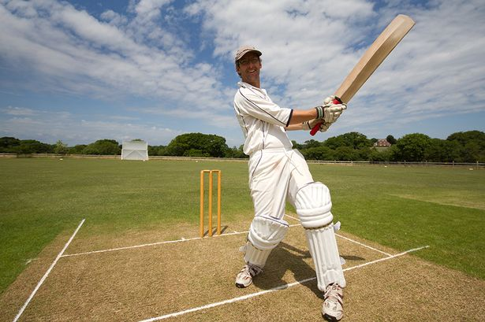
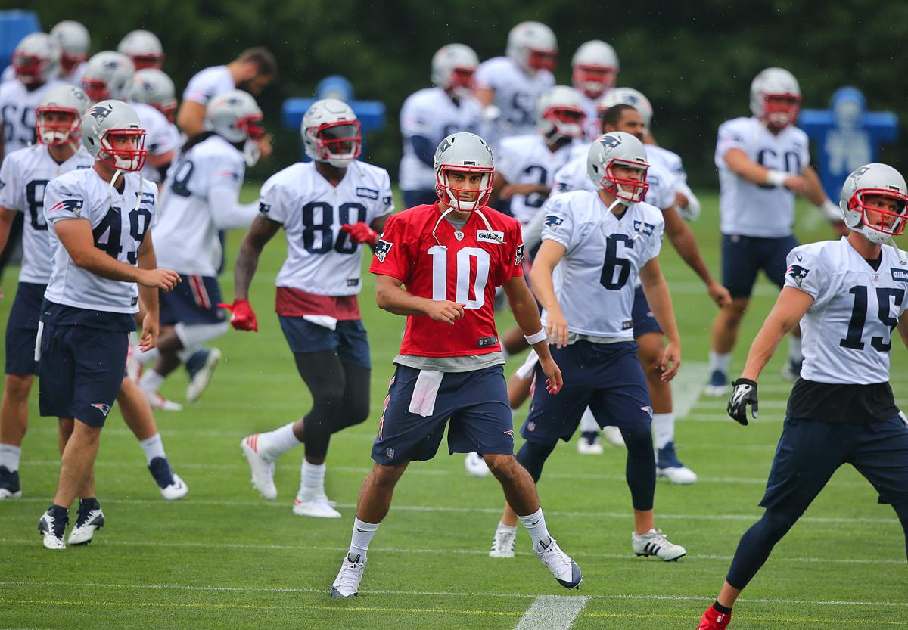
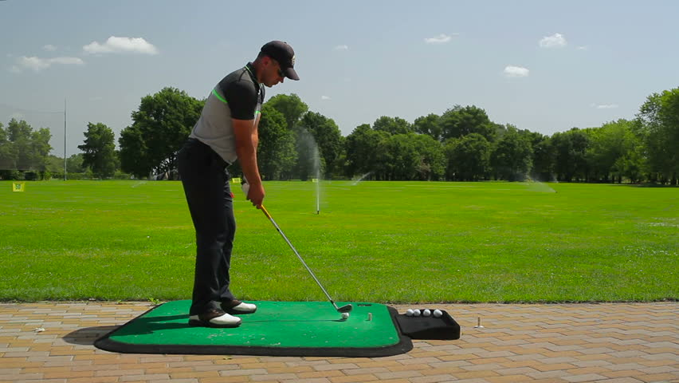
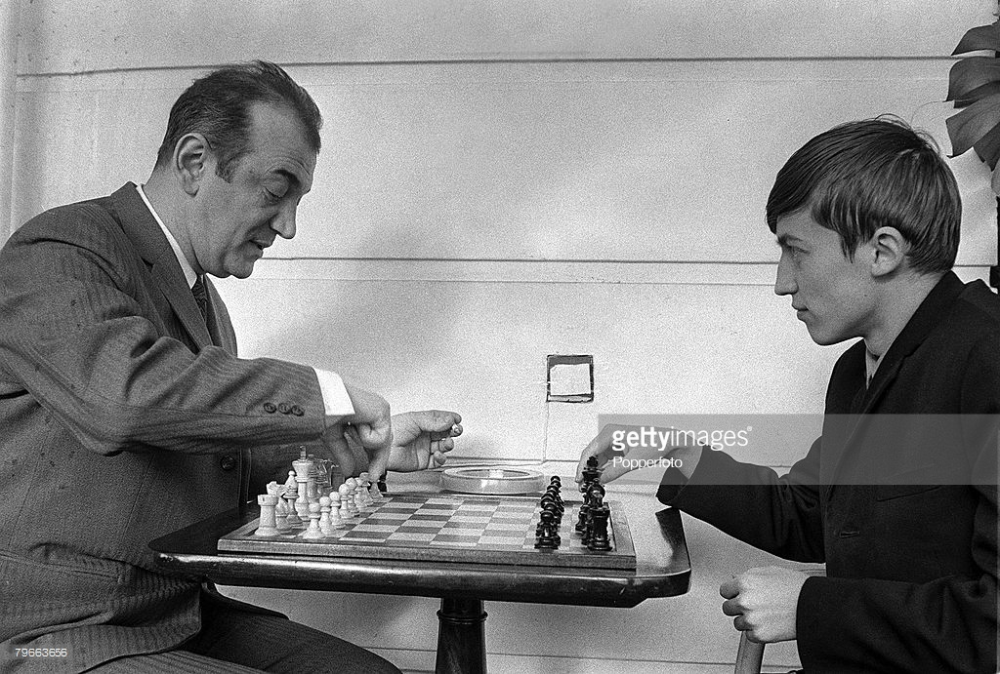
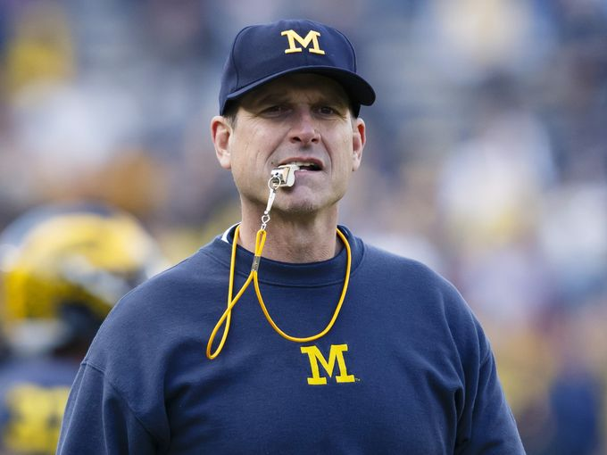

Coaches

Mr.Alvin Smith is a renowned cricketer known for his exemplary expertise in the art of batting and fielding. He has carved many striving cricketers to achieve
laurels at various national and international level competetions. He has the potential to mould the capacities of his pupil into their positive abilities.He has
endeavored to embrace the weakness of his students to turn it into their strong aspects.

Mr.Ajay Singh Panwar is an aspiring athlete and a successful basketball player. He is known for his passion towards teaching his students. He has made his students
embrace their potential to reach great heights. Many of this teachings and training sessions have also been uploaded online to adequate everyone with the method to furnish
themselves to be better athletes.

Mr.Kenny Sebastian is the coach of Golf. He has pursued his training as a training coach in Sehwag Sports Academy. He is also a member of the International Golf Club and has
won many prizes at various International and National platfroms. He has trained many students like Ananya Sharma and Athreya Bhatt who have proved their calibre by winning gold
and bronze medal at IGA Academy.
 Miss.Emilia stewart is the volleyball coach in our Academy .She has trained students very well and have brought awards and medals for the academy. She has trained students
to be flexible and quick.She also lead students to represent themselves at international level.
Miss.Emilia stewart is the volleyball coach in our Academy .She has trained students very well and have brought awards and medals for the academy. She has trained students
to be flexible and quick.She also lead students to represent themselves at international level.

Mr.George Rodriguez is the chess trainee in our Academy who has played a substantial role in equipping with students the trick to win chess and attain victory in this game. He even
conducts extra training sessions for the students to avail them all kind of opportunities by which they can gain a commendable flair in this game.

Mr.Monty Depp is a renowned footballer known for his exemplary expertise in the art of defending. He has carved many footballers to achieve laurels at various
national and international level competetions.